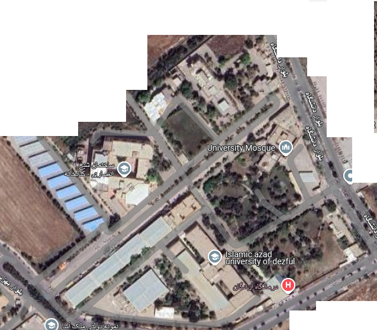

نقشه راهنمای دانشگاه
ساختمان:
-- انتخاب ساختمان --
دانشکده پرستاری و مامایی
دانشکده فنی
پارکینگ
ورودی اصلی
دانشکده علوم انسانی
مهمانسرای اساتید
ساختمان جدید 1
ساختمان جدید 2
ذخیره موقعیت
مبدا:
-- انتخاب ساختمان --
مقصد:
-- انتخاب ساختمان --
نمایش مسیر
بازنشانی